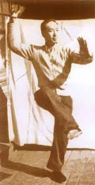

A distillation of essential neigong practices in the Chinese Martial Arts
Yiquan is essentially formless, containing no fixed sets of fighting movements or techniques. Instead, focus is put on developing one's natural movement and fighting abilities through a system of training methods and concepts, working to improve the perception of one's body, its movement, and of force. Yiquan is also set apart from other eastern martial arts in that traditional concepts like qi, meridians, dantian etc., are omitted, the reason being that understanding one's true nature happens in the present, and that preconceptions block this process. Yiquan is a distillation of the internal aspects at the core of all arts that Wang was exposed to, including Fujian Hequan , Taijiquan, Baguazhang, and Liuhebafa. Other arts as well, such as the swimming dragon posture, present in shiao jiao, is transformed through feeling, understanding, and the condition of the practitioner. In fact, typical movements and postures from other systems abound in yiquan. It was the internal core of these other arts that made them effective. This core is what Master Wang decoded. In essence, there is only one principle of merit in all martial arts, one core, one moment of truth, one Natural Fist.
You can read more about the history and legends through other web resources. This site is to promote and teach the REAL mechanics of Yiquan and HOW to apply those mechanics to the human body to perform optimally in real time. This lineage is sourced from Yao Chengguang, and his father Yao Zongxun, who further popularized and made several improvements to make it more combat ready.